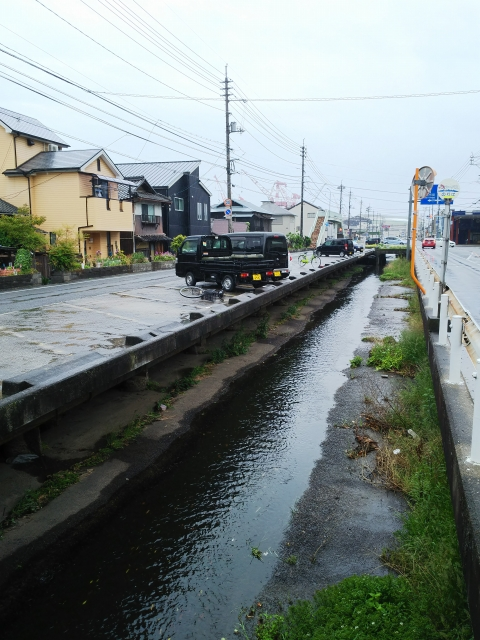
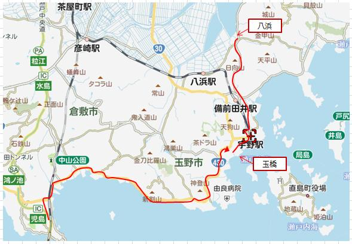
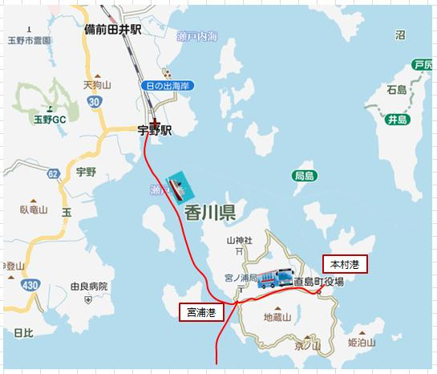
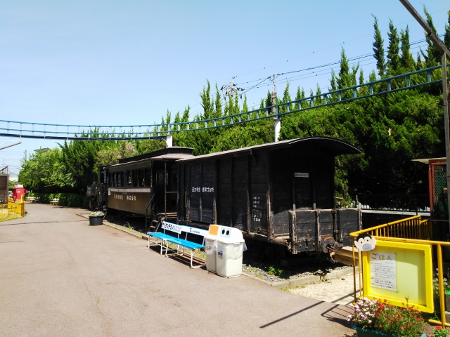

児島の駅には、「瀬戸大橋アンパンマントロッコ」が！子どもと乗ったなぁ。懐かしい。瀬戸大橋をトロッコで渡れるのでオススメです。
まずは児島駅から、目的地にバスで向かいます。
しばらくすると、海沿いを走ります。遠くに瀬戸大
橋が見えてる。
天気は生憎の雨です・・・。晴れてたらきれいな景
色やのに。

さて、やってきたのは玉野市の玉です。
この景色、見る人が見たら、わかりますよね！
そう、昭和４７年まであった、玉野市営電鉄の廃線跡です。
さっきの写真は、「たまひめじんじゃまえ」駅の北西あたりです。
車の停まってる、川にせり出した駐車場スペースが、まさに電車の走ってた
ところです。
このあたりが終点の「ゆうえんちまえ」あたりです。
面影は全くないですね。
遊園地前を、さらに奥に進んで行って、古い地図の
学校のあったところまで行くと、電車が保存されて
ます
廃線後、ことでんに譲渡されて２００６年まで走っ
てました。

廃線跡を戻り、玉駅から少し北に進んだ所です。
下の写真とほぼ同じところです。車両の奥のビルは、
ほぼ原形のままですね。
左側の建物が建て替わって、内科の看板がかかってる
建物になったみたいです。
玉駅のあったところです。今はバス停「玉橋」に。鉄道は画面奥から画面右にカーブしていってたみたいです。茶色の三角屋根の建物のあた
りが駅舎があったところですね。 しかし、これぐらい人家があるとこなので、もし民営ならもうちょっと生きながらえた鉄道かもしれません。
玉橋のバス停から岡山行のバスに乗り込んで、宇野
駅をスルーして、八浜というところへ。
八浜は、児島が干拓される前は瀬戸内航路の港街や
った所で古い街並みが残ってるとか。
ちなみに、児島も、大昔は島やったそうで。それが
地名に残ってるんやね。

やのに、バス遅れてきやがって、散策する時間なし！！古い街並みまであと一歩のところで時間切れ。とほほ・・・

宇野港に戻って、もう慣れた直島経由で高松に渡り。
ます。
直島の乗り継ぎで時間があったので、島の中心の東
海岸のほうに行ってみます。
ちょうどコミュニティバスがやってきました。

着いてみたら、宮浦とは大違いで静かな港でした。
ここからも、一日に何便か、宇野行の船が出てるよ
うです。

港周辺は観光スポットになってるみたいです。外人さんの団体もいてはりました。
宮浦に戻るバスですが、観光客で満員で乗れず！すぐに臨時便が来ると
いうのでキレずにすみました。

翌日、無事立会も終了し、高松とお別れです。
途中、端岡で途中下車。
香川のうどんで食べログ№１の店が、ここから歩い
て１０分ぐらいのところにあるとか。
最後はうどんでしめるか。
ここや、ここ。
確かに、おいしかった！特にこのかき揚げ。依田亭、
負けてるかも。
しか～し！好事魔多し、か、なぜかこの後おなかの調
子が・・・
天神橋筋商店街の某コロッケ屋みたいに、なにか薬の
ようなものが・・・（fromごぶごぶ）
岡山到着後、吉備線に乗換えます。国鉄型健在！
到着したのは備前三門駅。
次の目的地まで、ここから１５分ほど歩きます。
ここは昭和の香り漂う池田動物園です。

おった、おった。
井笠のコッペルと、西大寺の客車が保存されてます。
屋根もない環境ですが、木造客車もなんとかもって
ました。
かなり狭い動物園でしたが、おっさんには懐かしい雰囲気が随所に残ってます。
ただ、入園料１１００円は高いで。
さて、岡山まで戻り、そこからはおなじみの赤穂線
に乗り込んで、邑久までやってきました。
駅前に、牛窓行のバスが停まってます。次の目的地
は牛窓？
バスに乗ってると、竹久夢二の生家の横を通りまし
この辺りの出身なんや。
牛窓に到着です。
簡単なつくりの港発見。そう、次の目的地は、牛窓
の沖合にある、前島です。
往復で２４０円とは、安い！
フェリーがやって来ました。
シンプルなフォルムがいいっすね。
船に入ってすぐのところに切符売り場コーナーがあるっちゅう、初めての
パターンでした。
数人の客を乗せて、出航です。
牛窓の街並みが見えます。ここは江戸時代から瀬戸
内の潮待ち港として栄えたところなので、後で寄っ
てみます。
５分ぐらいで前島に到着です。
港の周辺に集落はなく、釣り客がまあまあいるぐら
い。
何年か前のオールフリーのＣＭのロケ地やったみた
いやけど、そこまで散策する元気もなく、すぐに引
返します。
牛窓に戻って、「唐琴通り」を歩いてみました。
楽しかった島めぐりも、、ひと段落つきました。邑久駅に戻ります。
今回の、最後の目的地にやってきました。
赤穂線の西片上駅です。ということは・・・
片上鉄道の廃線跡です。
片上駅のあったところはスーパーになっていて、駅
前ロータリーの面影だけが残ってます。
そこにモニュメントも。
上の写真とほぼ同じ位置からの写真です。（Ｗｉｋｉｐｅｄｉａより）
高校の時に来てるはずやけど、全く記憶にございません。今見ると、ええ感じの駅ですね。ＰＥＰＳＩの看板が渋い！
そん時撮った写真。駅舎の写真がないのが残念。
岡山って、よー考えたら、井笠、水島臨海、下津
井、玉野、岡山臨港、西大寺、片上って、めちゃ
めちゃ私鉄があったんやな。うち３つがナロー！
鉄道王国やがな。
帰り際、近くのローソンで、赤穂線の車内でくつろごうとコーヒー
を買って、いざマシンにセットしようと思たら、中に羽虫が・・・
多分、兵庫県からの移動を毛嫌いしてる岡山県知事のしわざやろな。
まぁ、キレたらんといたわ。